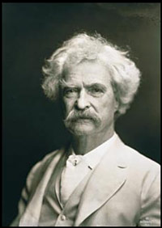

|
This WebQuest was designed using the model created by Dr. Bernie Dodge at San Diego State University. I would like to acknowledge the influence of The Mark Twain House and Museum in Hartford, Connecticut. An excellent seminar there in the summer of 2004 helped me appreciate the complexity of Twain's writing. The Mark Twain Boyhood Home and Museum in Hannibal, Missouri, very kindly awarded this WebQuest "Honorable Mention" in its 2007 Creative Teaching contest. Tom Sawyer lives! |
 |